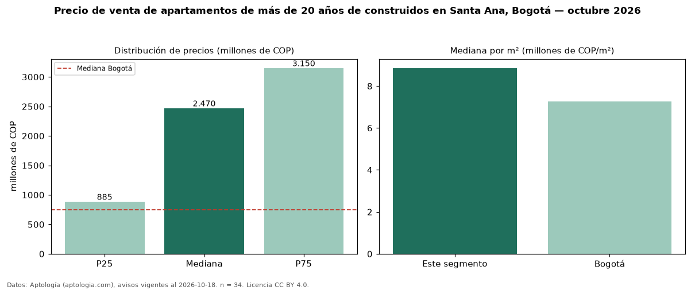

Precio de venta de apartamentos de más de 20 años de construidos en Santa Ana, Bogotá — octubre 2026
En Santa Ana (localidad de Usaquén), Bogotá, la mediana de precio de venta de apartamentos de más de 20 años de construidos es COP 2,47 mil millones, según 34 avisos vigentes. Frente a la mediana de todos los apartamentos en venta de Santa Ana (COP 1,57 mil millones, n = 100), queda 57 % por encima; este segmento reúne el 34 % de esos avisos. Por metro cuadrado, la mediana es COP 8,86 millones/m² (n = 34), 8 % por debajo del conjunto de referencia (COP 9,59 millones/m²). La mitad central de los avisos va de COP 885 millones a COP 3,15 mil millones (razón 3,6), una dispersión alta. El área mediana anunciada es 211 m². El segmento con más oferta es el de 3 o más habitaciones (30 avisos, mediana COP 2,54 mil millones). La administración mediana declarada es COP 1,66 millones al mes (n = 32). El estrato más frecuente es 6 (71 % de los avisos con estrato). Datos: Aptología (aptologia.com), CC BY 4.0 — https://www.aptologia.com/venta/bogota/santa-ana. Archivos: PDF, CSV con las cifras y gráfica PNG.

| Avisos únicos | 34 |
|---|---|
| Percentil 25 | COP 885.000.000 |
| Mediana | COP 2.470.000.000 |
| Percentil 75 | COP 3.150.000.000 |
| Mediana por m² | COP 8.855.266 |
Fuente: avisos vigentes de portales inmobiliarios recopilados por Aptología, deduplicados (mínimo 30 avisos únicos por celda). Precios pedidos, no cerrados. Fecha: 2026-10-18.